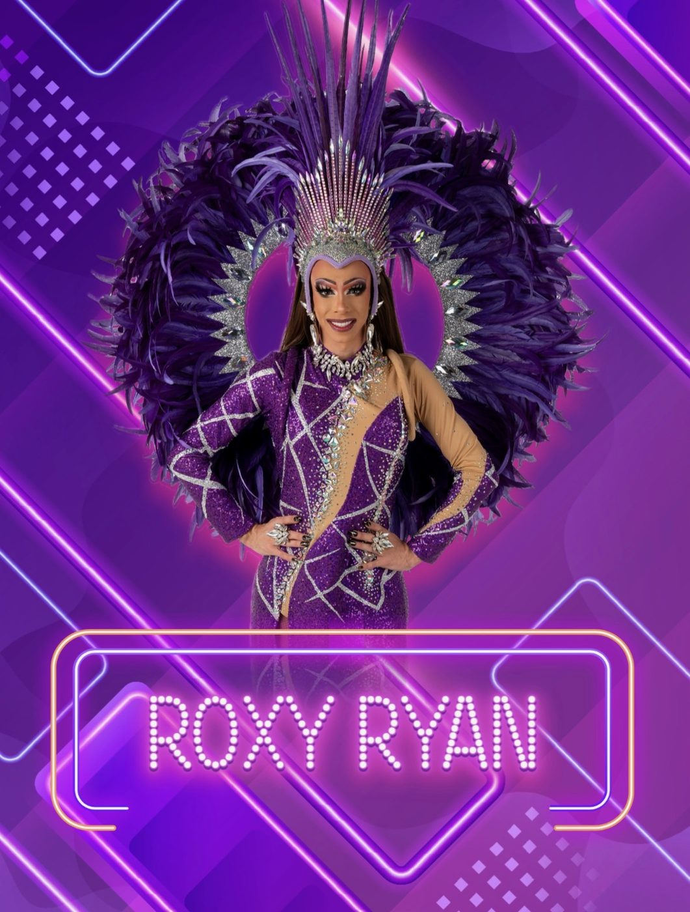
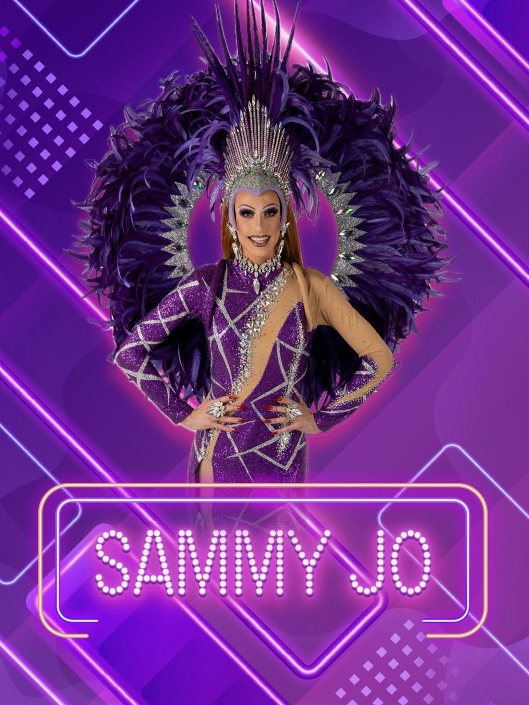
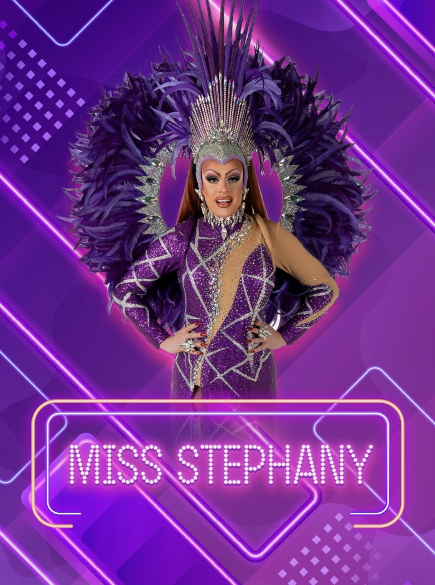
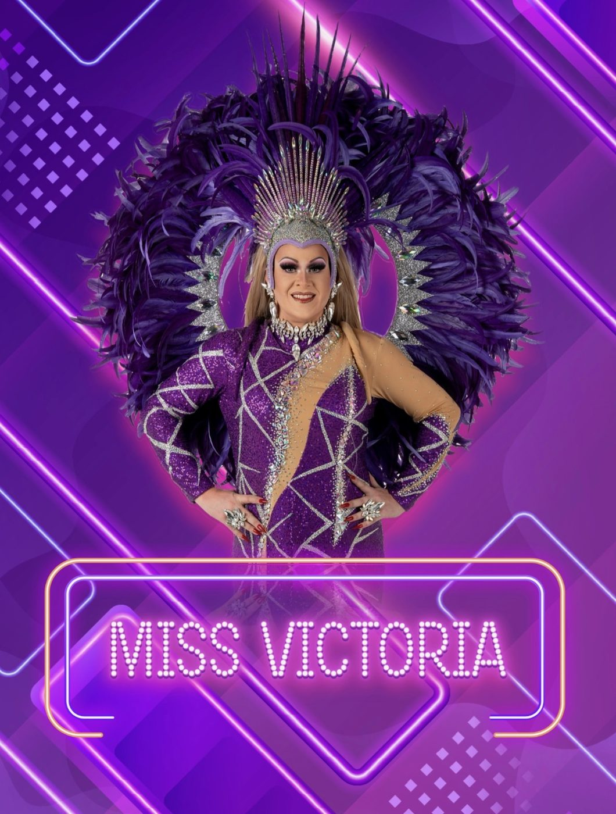
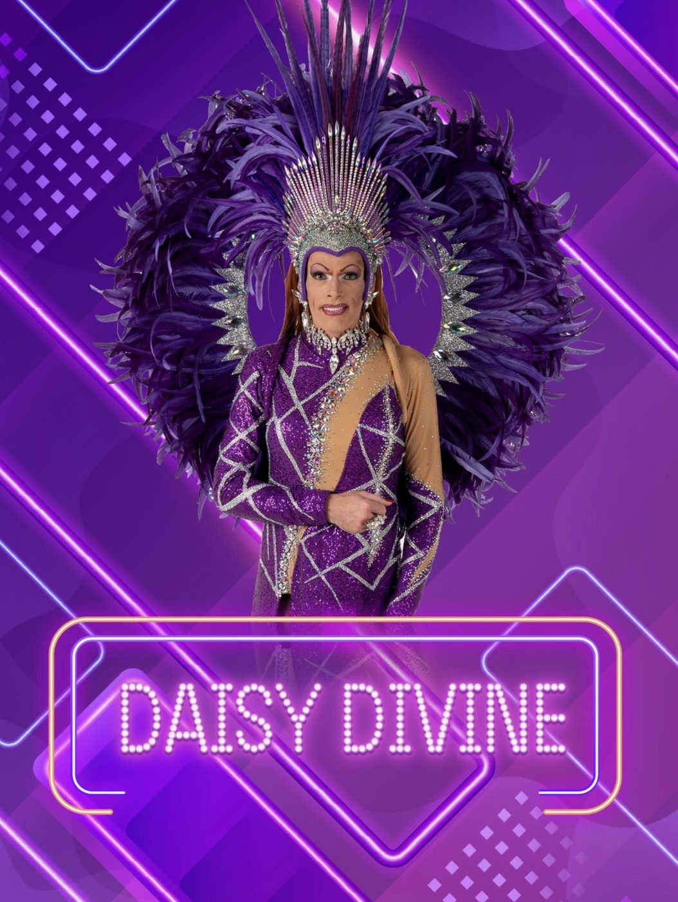

The Supermodels
The Supermodels is een gevestigde showgroep uit Laakdal die al jarenlang garant staat voor een spetterende mix van glitter, glamour, muziek, humor en entertainment.
Vijf sterke persoonlijkheden brengen samen één veelzijdige show waarin niets aan het toeval wordt overgelaten. Van indrukwekkende kostuums en herkenbare muziek tot humoristische momenten en verrassende podiumacts: The Supermodels weten als geen ander hoe ze een publiek kunnen entertainen.
De kracht van de groep zit in de combinatie van vijf verschillende artiesten. Miss Stephany, Sammy Jo, Daisy Divine, Miss Victoria en Roxy Ryan hebben elk hun eigen uitstraling, stijl en persoonlijkheid. Samen zorgen ze voor een gevarieerde show waarin elegantie, spektakel en humor elkaar voortdurend afwisselen.

Roxy Ryan
Roxy Ryan maakt het vijftal compleet. Met haar eigen stijl, uitstraling en energie brengt ze een frisse en persoonlijke toets binnen The Supermodels. Ze is ondertussen al meer dan 15 jaar actief in het wereldje en bouwde in die tijd een mooi palmares op, met onder meer de titel 2de Ere Dame Miss Travestie Antwerpen (2019) en een knappe 2de plaats als Eerste Eredame op Miss Travestie België (2023).
Roxy weet glamour en humor te combineren en voelt zich duidelijk thuis op het podium. Ze voelt perfect aan wanneer het publiek nood heeft aan een rustig, sfeervol moment, en wanneer het tijd is om helemaal los te gaan — die combinatie van klasse, elegantie en pure ambiance maakt haar tot een sterke aanvulling op de groep.
Ook achter de schermen is Roxy geen onbekende: ze strast er kostuums, niet enkel de hare, maar ook die van andere artiesten uit de scene. Haar enthousiasme en liefde voor entertainment, op én naast het podium, maken haar tot een veelzijdige troef binnen The Supermodels.
Meer over Roxy →Sammy Jo
Sammy Jo is de leading lady van The Supermodels. Met haar sterke persoonlijkheid, energie en gevoel voor entertainment neemt ze een prominente plaats in binnen de groep.
In 2022 werd Sammy Jo gekroond tot Miss Travestie België. Ook buiten het podium wist ze haar talent en persoonlijkheid te tonen, onder meer als jurylid in het televisieprogramma Make Up Your Mind.
Als leading lady vormt Sammy Jo een belangrijke schakel binnen de show en weet ze het publiek moeiteloos mee te nemen in het spektakel van The Supermodels.


Miss Stephany
Miss Stephany is een ervaren en gevestigde naam binnen de Belgische drag- en travestiewereld. In 2017 werd ze gekroond tot Miss Travestie België en in 2020 volgde de prestigieuze titel Miss der Missen. In 2023-2024 mocht ze zich bovendien Queen of the North noemen. Haar talent en uitstraling brachten haar zelfs tot ver buiten de Belgische grenzen, waar ze in Chicago een indrukwekkende vierde plaats ter wereld behaalde.
Met haar jarenlange podiumervaring, sterke présence en indrukwekkende palmares weet Stephany als geen ander hoe ze een zaal moet bespelen. Ze combineert uitstraling en glamour met een flinke dosis humor en is daarmee een van de vertrouwde gezichten binnen The Supermodels.
Miss Victoria
Miss Victoria is een van de vijf dames die samen het huidige gezicht van The Supermodels vormen.
Met haar eigen uitstraling en podiumstijl voegt ze een uniek element toe aan de groep. Victoria is een echte ambiance queen en heeft heel wat Nederlandstalige meezingers in haar repertoire, waarmee ze moeiteloos het publiek weet mee te krijgen. Net als haar collega's weet ze glamour en entertainment te combineren en vormt ze een belangrijke schakel in de veelzijdigheid van de show.
Achter de schermen werkt Victoria bovendien samen met Roxy Ryan aan de prachtige kostuums van The Supermodels. Samen zetten ze de stenen op de kostuums, waardoor elk optreden tot in de kleinste details kan schitteren.


Daisy Divine
Daisy Divine is niet alleen een vertrouwd gezicht binnen The Supermodels, ze is ook de oprichtster van de groep. Al jarenlang vormt ze een belangrijke drijvende kracht achter The Supermodels en drukte ze haar stempel op de uitstraling en het karakter van de show.
Jarenlang nam Daisy de rol van leading lady op zich. In 2025 gaf ze de fakkel van leading lady door aan Sammy Jo, maar uiteraard bleef Daisy een vaste en belangrijke waarde binnen The Supermodels.
Met haar jarenlange ervaring, eigen stijl, uitstraling en gevoel voor humor blijft Daisy een onmisbare schakel binnen de groep en draagt ze nog steeds bij aan de unieke sfeer en dynamiek van The Supermodels.
Familie op en naast het podium
Bij The Supermodels is er bovendien een bijzondere familiale band aanwezig. Miss Stephany en Sammy Jo zijn in het dagelijkse leven broers en ook Daisy Divine en Miss Stephany zijn al meer dan 10 jaar met elkaar getrouwd. Op het podium staan ze naast elkaar als professionele dragartiesten, elk met hun eigen uitstraling en persoonlijkheid.
Die bijzondere familieband maakt The Supermodels extra uniek. Wat op het podium een hechte groep van vijf artiesten is, is daarnaast ook verbonden door jarenlange vriendschap, liefde en familie. Die persoonlijke band zorgt voor een bijzondere dynamiek en vormt mee de basis van de warme sfeer binnen The Supermodels.
Iedere Supermodel heeft haar eigen karakter, stijl en manier van entertainen. Net die verschillen maken de groep zo boeiend. Waar de ene act uitpakt met glamour en elegantie, zorgt de volgende voor humor of een verrassend spektakelmoment. Het resultaat is een show die voortdurend in beweging blijft en waarin het publiek wordt meegenomen van het ene moment naar het andere.
The Supermodels staan voor een avond vol muziek, glitter, glamour, humor en entertainment. Vijf dames met elk hun eigen verhaal en uitstraling, samengebracht in één show die draait om één ding: het publiek een onvergetelijke tijd bezorgen.
The Supermodels: vijf persoonlijkheden, één show, pure entertainment.
Bekijk de agenda →